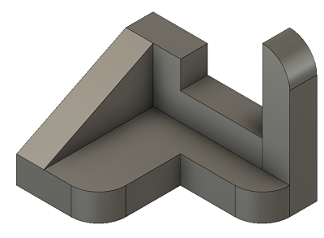
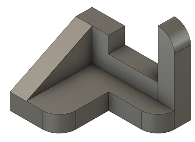

This rotation we started working with 3d modeling, using the program Autodesk Fusion 360. To start, we had to make six models from a set of fifty. It took me a bit to learn how to read the designs, but once I figured it out it was very easy to build what I needed to. It was intersting to figure out what the most efficient way to build a model was, such as from the bottom up or from the side out.
 

The second thing I made in autodesk was a laptop stand. I used a tutorial for the basics, but I modified it to fit my laptop, as well as some other small changes I thought would make it better.